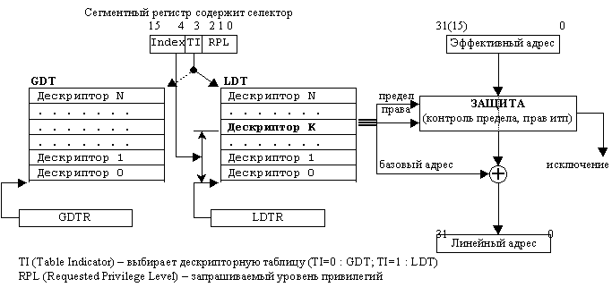

Список билетов
Билет 2
- Структура ядра ОС.
- Сегмент. организация памяти. Плюсы и минусы.
- Особенности FAT (таблицы адресов/адресные таблицы).
- Структура прохождения задания
через ВС.
- Прерывания. Виды, особенности реагирования на них ОС.
Билет 4
- Супервизор, его ф-ции и состав.
- Потоки и особенности их применения при организации вычислений.
- Теория рабочего множества и ее влияние на эффективность системы
управления памятью. Особенности реализации в современных ВС.
- Принципы повышения эффективности файловой системы.
- Фазы прерываний и их особенности.
7 (Макс)
- Схема функционирования ОС.
- PCB.
- ?
- Вход и выход из режима ожидания.
- Блокировка записи.
Билет 8
- Управление процессами – основа функционирования ОС. Состояние
процесса. Условия перехода из одного состояния в другое.
- Системные объекты для управления вычислительным процессом в
защищенном режиме.
- Применение ассоциативной памяти для повышения эффективности
управления выч. процессом.
- Физические и логические единицы работы файловой системы.
- Работа системы при подготовке и выполнении команды ввода/вывода.
Билет 10 (Рома)
- Концепции планирования процесса в многопрограммной ОС.
- Особенности планирования процессов в многопрогр. ОС в реальном
времени. Может ли Windows (ОС) работать в реальном времени? (Не может она,
почему неизвестно).
- Какой лучше… Особенности выбора размера страниц.
- Плюсы и минусы файловой системы РМС.
- Семафоры и особенности их использования.
Билет 12 (Рома)
- Процедура начальной загрузки ОС.
- Система управления памятью. Решаемые задачи.
- Особенности управления внешней памятью в UNIX.
- Состав системных объектов реализации защищенного режима.
- Сокеты. Особенности использования сокетов.
Билет 13
- Виды и организация памяти.
- Основ. структура ОС. Их назначение.
- Методы повышения эффективности управления внешних носителей данных.
- Структура загрузки MS-DOS. Назначение.
- Контекст процесса. Состав и назначение.
Билет 14
- Особенности генерации, инсталляции и инициализации ОС.
- Методы предотвращения тупиков.
- Система управления файлами. Решаемые задачи.
- Методы защиты памяти в различных схемах организации.
- Виды межпроцессорного (межпроцессного
скорее) взаимодействия. Их сравнение.
Билет 15
- Особенности задач, решаемых в распределенных ОС.
- Методы повышения эффективности организации вычислительного процесса
в ВС.
- Методы доступа к файлам. Особенности решаемых задач.
- Фрагментация и методы борьбы с ней.
- Виды прерываний и особенности их обработки.
Билет 16 (Макс)
- Особенности задач решаемые в ОС систем массового распараллеливания.
- Проблема управления памятью.
- Влияние методов доступа на реализацию файловой системы.
- Принципы управления в многозадачной ОС.
- Процесс и система прерываний. Особенности функционирования.
Билет 17
- Средства и способы общения между процессами.
- Виртуальная память.
- Способы выделения дисковой памяти на различных ОС.
- Многоуровневый планировщик процессов.
Билет 19
- Особенности ОС вычислительной системы.
- Принципы хранения в свободном месте различных ОС.
Билет 21
- Особенности переключения процессов между состояниями.
- Особенности ОС с микроядерной структурой.
- Особенности адресации в защищенном режиме.
Билет 22
- Виды сигналов.
- Состояние процессов.
- Экзоядро. (?!?!?!?!?!?!?!?!)
- Последовательность загрузки процесса в виртуальную память.
- Избежание тупиков.
Билет 23
- Монополитные (скорее
монопольные) ОС. Плюсы и минусы.
- Переход процесса в заблокированное состояние.
- Алгоритм Банкира.
- Виды приоритетных прерываний.
- Структура дескриптора таблицы страниц.
Билет 25
- Особенности ОС с микроядерной архитектурой. Плюсы/минусы.
- Особенности при переключении процессов между состояниями (нужен граф
состояний).
- Особенности адресации в защищенном режиме.
Билет 26
- Структура ОС.
- Доставка сообщений заблокированному процессу (особенности).
- Когерентные… (определение когерентности) (когерентность чего неизвестно)
- Алгоритм «часы».
- ?
Билет 28
- TSS. Структура и назначение.
- Взаимодействие контроллера прерываний с ОС.
- Согласование файловой системы (…два вектора…) (см. конспект)
- Назначение системы работы с памятью. (…про файловую систему…) (!?)
- Оптимизация/назначения работы файловой систем(…disk, FCFS…) (!?)
Билет 30
- Назначение КЭШа.
- Блокирование записей.
- Локальная и глобальная таблица дескрипторов
- Назначение системы ввода-вывода
- Правила формирования рабочего множества
Билет 2
1) Структура ядра ОС
- обрабатывающие прогр (компиляторы, загрузчики, редакторы связей)
- управляющие прогр ( 1) Пр-мы управления заданиями. Отслежывает
вход и выход задания в системе 2) Пр-мы управления задачами (процессами) 3)
Система управления файлами. 4) Управление памятью. Делиться на организацию и
управление памятью 5) Управление внешними устройствами)
Ядро действует от имени пользовательского процесса. Ядро не является
какой-то особой совокупностью процессов, выполняющихся параллельно с
пользовательскими, оно само выступает составной частью любого пользовательского
процесса. В режиме ядра процессам уже доступны адресные пространства ядра и
пользователей. Например, виртуальное адресное пространство процесса может быть
поделено на адреса, доступные только в режиме ядра, и на адреса, доступные в
любом режиме.
2) Сегментная организация памяти

(БАС – базовый адрес
сегмента, СО – сист область)
Программа ведется
модульно. Каждый модуль занимает непрерывную область памяти, но все программы
дробятся при загрузке. При этом возникают проблемы защиты. Требуется таблица сегментов
для определения места каждого сегмента. (БАС+имя)-таблица для А получили
эффективный адрес и смещение-получили адрес сегмента. Программа состоит из
множества модулей. Каждый модуль загружается в любое место.. Базовый адрес
определяется соответственно с таблицей сегментов. Чтобы рассчитать настоящий
адрес используется таблица страниц. В таблице много программ, для прогр. Табл.
сегментов, то появляется табл., в которой адреса таблиц сегментов для процесса.
3) Особенности ФАТ.
Таблиц, память.

В зависимости от
количества блоков на диске в сист MS-DOS применяется три версии файл сист FAT:
-12, -16, -32.
FAT-12 (макс размер
диска 64 Мбайт, раздела - 16)
FAT-16 (макс размер
диска 8 Гбайт, раздела - 2)
FAT-32 (макс размер
диска 8 Тбайт, раздела - 2)
4) Структура прохождения задачи через ВС.
(нужно смотреть прошлый семестр)
Если в системе есть ресурсы то всплывает
планировщик второго уровня (выбор из очереди задания; определить можно ли его
решить с помощью ресурсов, что есть в системе; вызвать инициализатор который
создает блок управления задачей.)
Признаком подкачки нового задания является
либо освобождение опер. памяти либо резкое уменьшение эффективной работы
вычислительной установки.
Как только процессор освобожден либо
естественно либо с вытеснением сработывает планировщик 3-го (верхнего уровня) и
из готовых задач он должен выбрать зад. Для выполнения и занять время
выполниние в процессоре.
5) Прерывания. Виды. Реакция ОС на них.
Прерывание – переход на другую програмную
последовательность.
Классы прер по понижению приоритета:
1 прерывание схем контроля
2 внешние прерывания
3 прерывания по вводу/выводу (по завершению операции)
4 по обращении к супервизору (вызов сист ф-ций)
5 программное прерывание или прерывание в исключительных ситуациях
(переполнение,…)
4 и 5 одного приоритетного
уровня, поскольку возникают в программе.
Есть 2 уровня приоритета
1.
приоритет сигналов прерываний
2.
приоритет прерывающих программ (для ОС более важен)
При фиксации прерываний КПП обрабатывает по приоритету сигналов. При образовании
процесса ОС рассматривает по приоритету прерывающих программ
Для ОС важен второй
уровень, для обработчика прерываний -1й
Реакция ОС на них
Тз — время
задержки между моментом возникновения сигнала прерывания и прерыванием активного
процесса. Оно зависит от принятого в системе (процессоре) способа обработки
сигнала прерывания: после такта работы процессора (реакция быстрая, но нужно
сохранять большой объем инф), после полного завершения команды (медленная
реакция, но маленький объем сохраняемой инф), после специально выделенных
команд (объем сохраняемой инф минимальный)
Тс — время
сохранения необходимой информации.
Тд — время
дешифрации сигнала прерывания. Зависит от аппаратуры, дешифрирующей сигнал
прерывания.
Тв — время
восстановления прерванного процесса. Зависит от количества восстанавливаемой
информации.
Билет 4
1) Супервизор. Состав и функции.
Ядро супервизора –
совокупность программ (управляющие программы), обеспечивающих функционирование
ВС и находящихся в системной области оперативной памяти, составляет ядро
супервизора.
Состав:
1) Пр-мы управления
заданиями. Отслежывает вход и выход задания в системе
2) Пр-мы управления
задачами (процессами)
3) Система
управления файлами.
4) Управление
памятью. Делиться на организацию и управление памятью
5) Управление
внешними устройствами
Следующие из этого ф-ции:
Обработка
прерываний; создание и уничтожение процессов; переключение процессов из
состояния в состояние; диспетчеризацию заданий, процессов и ресурсов;
приостановка и активизация процессов; синхронизация процессов; организация
взаимодействия между процессами; манипулирование РСВ; поддержка операций
ввода/вывода; поддержка распределения и перераспределения памяти; поддержка
работы файловой системы; поддержка механизма вызова – возврата при обращении к
процедурам; поддержка определенных функций по ведению учета работы машины;
Одна из самых важных функций, реализованная в ядре –
обработка прерываний.
2) Потоки и особенности их применения при организации вычислений.
Каждому процессу
соответствует адресное пространство и одиночный управляющий поток. Концепция
потоков добавляет к модели процесса возможность одновременного выполнения в
одной и той же среде процесса нескольких программ. Несколько потоков,
работающих параллельно в одном процессе, аналогичны нескольким процессам,
идущим параллельно на одном компьютере. В первом случае потоки разделяют
адресное пространство, открытые файлы и другие ресурсы. Во втором случае
процессы совместно пользуются физической памятью, дисками, принтерами и другими
ресурсами.
Многопоточность -
использования нескольких потоков в одном процессе.
Аргументом в пользу потоков является легкость их создания
и уничтожения (поскольку с потоком не связаны никакие ресурсы). Это свойство
особенно полезно, если необходимо динамическое и быстрое изменение числа
потоков
Также аргументом
является производительность. Концепция потоков не дает увеличения
производительности, если все они ограничены возможностями процессора. Но когда
имеется одновременная потребность в выполнении большого объема вычислений и
операций ввода-вывода, наличие потоков позволяет совмещать эти виды
деятельности во времени, тем самым увеличивая общую скорость работы приложения.
Концепция потоков полезна в системах с несколькими
процессорами, где возможен настоящий параллелизм.
3) Теория рабочего множества и ее влияние на эффективность работы системы
управления памятью. Особенности
реализации в современных ВС.
Множество страниц,
которое процесс использует в данный момент, называется рабочим набором.
Нужно удалить
страницу, не находящуюся в рабочем множестве (наборе). Для этого система для
каждого процесса ведет характеристику, назыв "текущее виртуальное
время" (абсолютное время работы процесса).
Задается время Т
(фиксированное) и есть время последнего использования процесса.
При страничных прерываниях анализируется время последнего
использования. Если анализ страница имеет R=1, то текущее вирт время становится
временем последнего использования и сбрасывается в "0". Если R=0, то
вычисляется вирт время минус время последнего использ. Если оно больше Т, то
страница удаляется. Если меньше Т, помещается в список кандидатов на удаление.
4) Принципы повышения эффективности работы файловых систем.
Кэширование
Для минимизации к-ва
обращений к диску применяется блочный кэш или буферный кэш (набор блоков,
логически принадлежащих диску, но хранящихся в ОП).
Перехватка всех запросов чтения к диску и проверке наличия
требующихся блоков в кэше. Если блок присутствует в кэше, то запрос чтения
блока может быть удовлетворен без обращения к диску. В противном случае блок
сначала считывается с диска в кэш, а оттуда копируется по нужному адресу
памяти. По следующие обращения к тому же блоку могут удовлетворяться из кэша.
Опережающее чтение блока
Получение блоков
диска в кэш прежде, чем они потребуются. Многие файлы считываются
последовательно. Когда файловая система получает запрос на чтение блока к
файла, она выполняет его, но после этого сразу проверяет, есть ли в кэше блок
к + 1. Если этого блока в кэше нет, файловая система читает его в надежде, что
к тому моменту, когда он понадобится, этот блок уже будет считан в кэш. В
крайнем случае, он уже будет на пути туда.
Если обращения к блокам файла производятся в случайном порядке,
опережающее чтение не помогает.
Снижение времени
перемещения блока головок
Другой важный метод
состоит в уменьшении затрат времени на перемещение блока головок. Достигается
это помещением блоков, к которым высока вероятность доступа в течение короткого
интервала времени, близко друг к другу, желательно на одном цилиндре. Когда
записывается выходной файл, файловая система должна зарезервировать место для
чтения таких блоков за одну операцию. Если свободные блоки учитываются в
битовом массиве, а весь битовый массив помещается в оперативной памяти, то
довольно легко выбрать свободный блок как можно ближе к предыдущему блоку. В
случае когда свободные блоки хранятся в списке, часть которого в оперативной
памяти, а часть на диске, сделать это значительно труднее.
5) Фазы прерываний и их особенности.
Прерывание – переход на другую програмную
последовательность.
Фазы прерывания:
Тз — время задержки между моментом возникновения сигнала
прерывания и прерыванием активного процесса. Оно зависит от принятого в системе
(процессоре) способа обработки сигнала прерывания: после такта работы
процессора (реакция быстрая, но нужно сохранять большой объем инф), после
полного завершения команды (медленная реакция, но маленький объем сохраняемой
инф), после специально выделенных команд (объем сохраняемой инф минимальный)
Тс — время сохранения необходимой информации.
Тд — время дешифрации сигнала прерывания. Зависит от
аппаратуры, дешифрирующей сигнал прерывания.
Тв — время восстановления прерванного процесса. Зависит от
количества восстанавливаемой информации.
Время между возникновением сигнала прерывания и началом
выполнения обработчика прерывания называется временем реакции системы на сигнал
прерывания (Тр).
Билет 8
1)
Управление процессами – основа функционирования ОС.
Процесс ¾ это теоретическое понятие, на основании которого можно описать то, что
происходит в системе при выполнении некоторых действий (программы).
Процесс : это динамический объект системы, которому она выделяет
ресурсы; это траектория процессора в
адресном пространстве ВС.
Выполнение функций ОС, связанных с управлением процессами, осуществляется
с помощью блока управления процессом
(РСВ). Вход в процесс (фиксация
системой процесса) ¾ это создание его блока управления (РСВ), а выход из процесса ¾ это его уничтожение, т. е. уничтожение его блока
управления.
Таким образом для каждого активизированного процесса система создает РСВ,
в котором в сжатом виде содержится информация о процессе, используемая при
управлении. РСВ ¾ это системная структура данных, содержащая определенные сведения о
процессе и имеющая следующие поля:
Уникальный индентификатор процесса (имя) 2.Текущее состояние процесса.
3.Приоритет процесса. 4. Указатели участка памяти выделенного программе,
подчиненной данному процессу. 5.Указатели выделенных ему ресурсов. 6.Область
сохранения регистров. 7.Права процесса (список разрешенных операций) 8.Связи
зависимости в иерархии процессов (список дочерних процессов, имя родительского
процесса) 9.Пусковой адрес программы, подчиненной данному процессу.
Когда ОС переключает
процессор с процесса на процесс, она использует области сохранения регистров в
РСВ для запоминания информации, необходимой для рестарта (повторного запуска)
каждого процесса с точки прерывания, когда он в следующий раз получит в свое
распоряжение процессор. Количество процессов в системе ограничено и
определяется самой системой, пользователем во время генерации ОС или при
загрузке. Блоки управления системных процессов создаются при загрузке системы.
Однако, количество блоков управления системными процессами меньше, чем
количество самих системных процессов. Это связано с тем, что структура ОС имеет
либо оверлейную, либо динамически ¾ последовательную структуру иерархического типа, и нет необходимости
создавать для программ, которые никогда не будут находиться одновременно в
оперативной памяти, отдельные РСВ.
Для синхронизации в РСВ имеются четыре поля:
1-2. Поля для организации цепочки связи.3-4. Поля для организации цепочки
ожидания.
В цепочке связи указывается адрес РСВ вызываемого (поле 1) и вызывающего
(поле 2) процесса. В цепочке ожидания, в поле 3 указывается адрес РСВ
вызываемого процесса, если вызываемый процесс занят. В поле 4 занятого процесса
находится число процессов, которые ожидают данный.
Если процесс А пытается вызвать процесс В, а у процесса В в РСВ занята
цепочка связей, то есть он является вызываемым по отношению к другим процессам,
тогда адрес процесса В записывается в цепочке ожидания РСВ процесса А, а в поле
счетчика ожидания РСВ процесса В добавляется 1. Как только процесс В завершает
выполнение своих функций, он передает управление вызывающему процессу следующим
образом: В проверяет состояние своего счетчика ожидания, и, если счетчик больше
0, то среди РСВ других процессов ищется первый (по приоритету или другим
признакам) процесс, в поле 3 РСВ которого стоит имя ожидаемого процесса, в
данном случае В, тогда управление передается этому процессу.
2)
Системные объекты для управления процессами в защищенном режиме
По идее это GDT и LDT.
Основа виртуальной памяти системы Pentium состоит их двух
таблиц: локальной таблицы дескрипторов LDT (Local Descriptor Table) и глобальной
таблицы дескрипторов GDT (Global Descriptor Table). У каждой программы есть своя собственная таблица LDT, но
глобальная таблица дескрипторов одна, ее совместно используют все программы в
компьютере. Таблица LDT описывает сегменты, локальные для каждой программы, включая ее код,
данные, стек и т. д., тогда как таблица GDT несет информацию о
системных сегментах, включая саму операционную систему.
Чтобы получить доступ к сегменту, программа системы Pentium сначала загружает селектор для этого сегмента в один из шести
сегментных регистров машины. Во время выполнения регистр CS содержит
селектор для сегмента кода команд, а регистр DS хранит селектор для
сегмента данных. Каждый селектор представляет собой 16-разрядный номер (рис.
4.40). Один из битов селектора несет информацию о том, является ли данный
сегмент локальным или глобальным (то есть находится ли он в локальной или
глобальной таблице дескрипторов). Следующие тринадцать битов определяют номер
записи в таблице дескрипторов, поэтому эти таблицы ограничены: каждая содержит
8 К сегментных дескрипторов. Остальные 2 бита относятся к проблемам защиты и
будут описаны позже. Дескриптор 0 является запрещенным. Его можно безопасно
загрузить в сегментный регистр, чтобы обозначить, что сегментный регистр в данный
момент недоступен. При попытке его использовать происходит прерывание.
Во время загрузки селектора в сегментный регистр
соответствующий дескриптор извлекается из локальной или глобальной таблицы
дескрипторов и сохраняется в микропрограммных регистрах, что обеспечивает к
нему быстрый доступ. Дескриптор состоит из 8 байт, в которые входит базовый
адрес сегмента, размер и другая информация (рис. 4.41).
Формат селектора искусно выбирался так, чтобы упростить
определение местоположения дескриптора. Сначала выбирается локальная или
глобальная таблица дескрипторов, основываясь на бите два селектора. Затем
селектор копируется во внутренний рабочий регистр и три младших бита
приравниваются к 0. Наконец, к нему прибавляется адрес одной из таблиц, чтобы
получить прямой указатель на дескриптор. Например, селектор 72 ссылается на
запись 9 в глобальной таблице дескрипторов, расположенную по адресу в таблице GDT+72.
Теперь проследим
шаги, с помощью которых пара (селектор, смещение) преобразуется в физический
адрес. Как только микропрограмма узнает, какой сегментный регистр
используется, она может найти в своих внутренних регистрах полный дескриптор,
соответствующий этому селектору. Если сегмент не существует (селектор равен 0)
или в данный момент выгружен, возникает прерывание.
3)
Повышение эффективности ВС за счет ассоциативной памяти.
Системы с ассоциативной памятью
представляют собой такие параллельные системы типа ОКМДР, которые оперируют с данными при доступе к ним при помощи тэгов пли выборки по содержимому ячеек
памяти в большей степени, чем при
помощи адресов. Ассоциативная память реализует принцип естественного
параллелизма, за счет этого улучшение вычислений. Применяется в машинах Data flow. Но эта память дорогостоящая. Пример машины с
ассоц. Памятью – STARAN.
4)
Физические и логические единицы работы файловой системы
1)
Том – объем инф. Доступный 1 устройству чтения-записи.
Может быть многотомный файл и многофайловый том.
2)
Запись. Физич. – любая инф. Считанная за 1 обращение к
диску. Физическая запись обычно> логической. ПО этому вопросу больше ничего
написать не могу. Если можешь скажи)
Логическая: бит, байт, внутр./внеш. Слово,
поле-совокупность символов, запись – совокупность полей, файл – совокупность
записей, совокупность файлов -база данных.
5)
Компилятор перед любой командой в/в
ставит системный взвод( с точки зрения машины это прерывание SVC-обращение к супервизору). Система должна среагировать на прерывание при
этом сбрасывается текущее значение PSW в старое.
-передаем параметры
в канальную программу
-передача адресов
ВУ(Лукас абонентская система)
-выдвча команды в/в
-проверка канального
слова
-прога порашивает
словосостояние канала на подтверждение нормального старта.
-возвращаем в текущее PSW старое
-по завершению это
фиксируется в CSW и идет физ. Прерывание по в/в.
-проверка CSW и переход на
след. Команду.
Билет 13
1.
Виды и организация памяти.
Существует
сегментная, страничная, сегментно-страничная и виртуальная память.
Страничная
подразумевает разбиение адресного пространства программы на страницы
фиксированного размера и разбиение ОП на блоки или фреймы того же размера. Виды
страничной организации: ●чистая страничная, ●страничная по запросу,
●сегм.-стран организация. При сегментно-страничной организации программа
разбита на блоки, которые вызываются по мере необходимости, а для каждого блока
своя таблица страниц.
2.
Основ. структура ОС. Их назначение.
Идеи структурной
организации ОС:
1)
монолитный – при увеличении количества команд, добавление
функции требует переписывания системы
2)
многоуровневые (ОС с кольцевой структурой). Система
включала 6 уровней. Уровень 0 занимался распределением времени процессора,
переключая процессы при возникновении прерывания или при срабатывании таймера.
Над уровнем 0 система состояла из последовательных процессов, каждый из которых
можно было запрограммировать, не заботясь о том, что на одном процессоре
запущено несколько процессов. Другими словами, уровень 0 обеспечивал базовую
многозадачность процессора.
Уровень 1 управлял памятью. Он выделял процессам пространство в оперативной
памяти и на магнитном барабане объемом 512 К слов для тех частей процессов
(страниц), которые не помешались в оперативной памяти. Процессы более высоких
уровней не заботились о том, находятся ли они в данный момент в памяти или нэ
барабане. Программное обеспечение уровня 1 обеспечивало попадание страниц в
оперативную память по мере необходимости.
Уровень 2 управлял
связью между консолью оператора и процессами. Таким образом, все процессы выше
этого уровня имели свою собственную консоль оператора. Уровень 3 управлял
устройствами ввода-вывода и буферизовал потоки информации к ним и от них. Любой
процесс выше уровня 3, вместо того чтобы работать с конкретными устройствами, с
их разнообразными особенностями, мог обращаться к абстрактным устройствам
ввода-вывода, обладающим удобными для пользователя характеристиками. На уровне
4 работали пользовательские программы, которым не надо было заботиться ни о
процессах, ни о памяти, ни о консоли, ни об управлении устройствами
ввода-вывода. Процесс системного оператора размещался на уровне 5.
3)
Микроядерная архитектура – функциональная независимость
и универсальность системы. Ядро должно
работать с программой пользователя. Здесь имеется ядро и функциональные блоки.
Ядро здесь компактное и только передает блокам информацию по синхронизации и
отслеживает «общение» между процессами, а дальше блоки работают самостоятельно
3.
Методы повышения эффективности управления внешних носителей данных.
Существенная часть операционной системы занимается
вводом-выводом. Операция ввода-вывода может выполняться тремя способами.
Во-первых, при помощи программного ввода-вывода, при котором центральный процессор
вводит или выводит каждый байт или слово, находясь в цикле ожидания готовности
устройства ввода-вывода. Второй способ представляет собой управляемый
прерываниями ввод-вывод, при котором центральный процессор начинает передачу
ввода-вывода для символа или слова, после чего переключается па другой процесс,
пока прерывание от устройства не сообщит ему об окончании операции
ввода-вывода. Третий способ заключается в использовании прямого доступа к
памяти (DMA), при
котором отдельная микросхема управляет переносом целого блока данных, и
инициирует прерывание только после окончании операции переноса блока.
Существует большое количество типов дисков, включая
магнитные диски, системы RAID и различные типы оптических дисков. Алгоритмы
планирования перемещения блока головок часто могут улучшить производительность
диска, но наличие виртуальной геометрии усложняет эту задачу. При помощи
объединения двух дисков в пару может быть создан надежный носитель данных с
определенными полезными свойствами.
4.
Структура загрузки MS-DOS. Назначение.
Для функционирования операционной системы MS-DOS в оперативную память
программой начальной загрузки загружается обязательная часть MS-DOS: MSDOS.SYS,
IO.SYS, COMMAND.COM.
·
IO.SYS ¾ обеспечивает логический интерфейс низкого уровня между системой и
аппаратурой (через BIOS); содержит набор
резидентных драйверов основных периферийных устройств. При инициализации программа определяет
состояние всех устройств и оборудования, а также управляет операциями обмена
между памятью и внешними устройствами.
·
В MSDOS.SYS располагаются программы управления памятью,
файлами, данными, внешними устройствами, заданиями, процессами. Это центральный
компонент DOS, реализующий основные функции ОС ¾ управление ресурсами ПК и выполняемыми программами. Основу составляют
обработчики прерываний верхнего уровня.
·
COMMAND.COM ¾ командный процессор, обеспечивающий интерфейс пользователя с
вычислительной системой
Файл IO.SYS, загруженный с диска, обычно состоит из двух
модулей: BIOS и SYSINIT. SYSINIT вызывается с помощью программы инициализации
BIOS. Модуль определяет величину непрерывной памяти, доступной системе, и затем
располагает SYSINIT в старшие адреса. Далее модуль переносит ядро системы DOS,
MSDOS.SYS, из области ее начальной загрузки в область окончательного
расположения.
Далее SYSINIT вызывает программу инициализации в модуле
MSDOS.SYS. Ядро DOS инициализирует ее внутренние таблицы и рабочие области,
устанавливает вектора прерываний по адресам с 20h по 2Fh и перебирает связанный
список резидентных драйверов устройств, вызывая функцию инициализации для
каждого из них.
Когда ядро DOS проинициализировано и все резидентные
драйверы доступны, модуль SYSINIT может вызвать обычный файловый сервис системы
MS-DOS и открыть файл CONFIG.SYS. Драйверы, в соответствии с директивами
DEVICE=, указанными в CONFIG.SYS, последовательно загружаются в память,
активизируются с помощью вызовов соответствующих модулей инициализации и
заносятся в связанный список драйверов. Функции инициализации каждого из них
сообщают SYSINIT размер памяти, отведенный под соответствующий драйвер.
После загрузки всех установленных драйверов, SYSINIT
закрывает все дескрипторы файлов и открывает консоль, принтер и
последовательный порт. Это позволяет замещать резидентные драйверы BIOS
стандартных устройств. Модуль
SYSINIT перемещает себя к старшим
адресам памяти и сдвигает ядро системы DOS в строну младших адресов памяти в область
окончательного расположения.
В конце своего выполнения SYSINIT вызывает системную
функцию EXEC для загрузки интерпретатора командной строки, т.е. COMMAND.COM.
COMMAND.COM ¾ командный процессор, который обеспечивает интерфейс пользователя с
установкой.
5.
Контекст процесса. Состав и назначение.
Существует 3 вида
контекста: пользователя, ядра, регистра. Понятие контекстов используется при
смене процессов. Поток ассоциируется с выполнением команд на процессоре
Рассмотрим механизм передачи управления программе обработки прерывания (IH). Как было сказано выше, ОС
запоминает состояние прерванного процесса и передает управление IH. Эта
операция называется переключением контекста.
При реализации переключения используются слова
состояния программы (PSW), с помощью которых осуществляется управление
порядком выполнения команд. В PSW
содержится информация относительно состояния процесса, обеспечивающая
продолжение прерванной программы на момент прерывания.
Обнаружив сигнал прерывания, процессор должен запомнить состояние
прерванного процесса для того, чтобы продолжить его выполнение после обработки
прерывания. После этого в процессор загружается новый процесс, выполняющий
обработку прерывания. Эта процедура получила название переключения контекста или переключения
состояния. Она является одной из важнейших в организации работы
операционной системы, причем ее реализация требует поддержки и выполнения
некоторых функций на аппаратном уровне.
При переключении контекста процессор сохраняет содержимое PSW, затем
помещает в него новое значение, соответствующее процессу, называемому обработчиком прерывания (Interrupt Handler, IH), который и выполняет
обработку самого прерывания. После завершения обработки прерывания в PSW
восстанавливается содержимое сохраненного ранее PSW.
Билет 14
1.
Особенности генерации, инсталляции и инициализации ОС.
Процесс отбора из дистрибутива тех программных модулей, которые будут
использоваться называется генерацией
операционной системы. Процесс генерации выполняется либо с использованием
специального "языка генерации", либо с помощью организации диалога
пользователя с системой в результате которого определяются желания и требования
пользователя к функционированию системы, а система в соответствии с этим
определяет совокупность необходимых программ, поддерживающих эти требования.
При функционировании вычислительной системы пользователь может менять
свои представления о ее функционировании. Кроме этого может меняться и состав
оборудования. Процесс локальной настройки ОС по желанию пользователя называется
инсталляцией. Признаком, по которому можно отличить
инсталляцию от генерации является то, что, если при настройке операционной
системы не используется дистрибутив ¾ это инсталляция, если требуется
дистрибутив ¾ генерация.
При загрузке ОС необходимо выполнить связывание, размещение всех частей,
входящих в ядро супервизора, т.е. размещение резидентных программ на своих
местах, формирование специальных системных структур данных в области данных
операционной системы, формирование постоянной области, активизацию процессов
для начала работы операционной системы. Этот процесс называется инициализацией операционной
системы.
2.
Методы предотвращения тупиков.
Возникновение тупика невозможно, если нарушается одно из четырех
необходимых условий возникновения тупиковых ситуаций. Первое условие при этом
можно и не нарушать, т.е. считаем, что процесс может обладать монопольным
правом владения ресурсами. Нарушая остальные три условия, получаем следующие три
способа предотвращения тупиков:
I способ. Процесс
запрашивает и получает все ресурсы сразу. Если процесс не имеет возможности
получить все требуемые ресурсы сразу, т.е. некоторые из них на данный момент
заняты, то он должен ожидать освобождения требуемых ресурсов. При этом он не
должен удерживать за собой какие-либо ресурсы. Нарушается условие
"ожидания дополнительных ресурсов" (2-е) и тупиковая ситуация
невозможна. При этом способе имеем простой процессов, ожидающих выделения
ресурсов, и работу вхолостую значительной части ресурсов. Можно прибегнуть к
разделению программы на несколько программных шагов, работающих независимо друг
от друга. При этом выделение ресурсов можно осуществлять для каждого шага
программы, однако увеличиваются расходы на этапе проектирования прикладных программ.
Этот способ имеет
два существенных недостатка: 1).
Снижается эффективность работы системы;
2). Усиливается вероятность бесконечного откладывания для всех
процессов.
II способ. Если процесс,
удерживающий за собой определенные ресурсы, затребовал дополнительные и получил
отказ в их получении, он должен освободить все ранее полученные ресурсы. При
необходимости процесс должен будет запросить их снова вместе с дополнительными.
Здесь нарушается условие "перераспределения" (3-е). При этом способе
каждый процесс может несколько раз запрашивать, получать и отдавать ресурсы
системе. При этом система будет выполнять массу лишней работы ¾ происходит деградация системы с точки зрения полезной работы.
Недостатки этого способа: 1) Если
процесс в течение некоторого времени удерживал ресурсы, а затем освободил их,
он может потерять имевшуюся информацию.
2) Здесь также возможно бесконечное откладывание процессов ¾ процесс запрашивает ресурсы, получает их, однако не может
завершиться, т.к. требуются дополнительные ресурсы; далее он, не завершившись,
отдает имеющиеся у него ресурсы системе; затем он снова запрашивает ресурсы и
т.д.
Имеем бесконечную цепочку откладывания завершения процесса.
III
способ. Стратегия линейности. Все ресурсы выстроены в порядке присвоенных
приоритетов и захват новых ресурсов может быть выполнен только в порядке
возрастания приоритетов. При этом нарушается условие "круговая цепь
ожидания" (4-е).
Трудности и недостатки данного способа:
1) Поскольку запрос ресурсов осуществляется в порядке возрастания
приоритетов, а они назначаются при установке машины, то в случае введения новых
типов ресурсов может возникнуть необходимость переработки существующих программ
и систем; 2) Приоритеты ресурсов должны отражать нормальный
порядок, в котором большинство заданий используют ресурсы. Однако, если задание
требует ресурсы не в этом порядке, то оно будет захватывать и удерживать
некоторые ресурсы задолго до того, как появится необходимость их использования ¾ теряется эффективность.
3) Способ не
предоставляет удобства пользователям.
3.
Система управления файлами. Решаемые задачи.
Разработчикам файловых систем приходится заботиться о
том, как файлам выделяется место на диске, и о том, как система следит за тем,
какой блок какому файлу принадлежит. Различные варианты реализации файлов включают
в себя непрерывные файлы, связные списки, таблицы размещения файлов и i-узлы. В
различных системах используются различные каталоговые структуры. Атрибуты
файла могут храниться прямо в каталоге или в другом месте (например, в i-узле). Учет
дискового пространства может осуществляться с помощью списков свободных блоков
или битовых массивов. Надежность файловых систем может быть увеличена при
помощи создания инкрементных резервных копий, а также с помощью программы,
способной исправлять поврежденные файловые
системы. Производительность файловых систем также является важным вопросом. Она
может быть увеличена различными способами, включая кэширование, опережающее
чтение и размещение блоков файла рядом друг с другом. Файловые системы с
журнальной структурой тоже увеличивают производительность, выполняя операции
записи большими блоками данных.
4.
Методы защиты памяти в различных схемах организации.
Для защиты компьютера 360 компания IBM приняла
следующее решение: она разделила память на блоки по 2 Кбайт и назначила каждому
блоку 4-битовый защитный код. Регистр PSW (Program Status Word – слово
состояния программы) содержал 4-битовый ключ. Аппаратура IBM 360
перехватывала все попытки работающих процессов обратиться к любой части
памяти, чей защитный код отличался от содержимого регистра слова состояния
программы. Так как только операционная система могла изменять коды защиты и
ключи, предотвращалось вмешательство пользовательских процессов в дела друг
друга и в работу операционной системы.
Альтернативное решение сразу обеих проблем (защиты и
перераспределения) заключается в оснащении машины двумя специальными
аппаратными регистрами, называемыми базовым и предельным регистрами.
При планировании процесса в базовый регистр загружается адрес начала
раздела памяти, а в предельный регистр помещается длина раздела. К каждому
автоматически формируемому адресу перед его передачей в память прибавляется
содержимое базового регистра. Таким образом, если базовый регистр содержит
величину 100 К, команда CALL 100 будет превращена в команду CALL 100K+100 без
изменения самой команды. Кроме того, адреса проверяются по отношению к
предельному регистру для гарантии, что они не используются для адресации памяти
вне текущего раздела. Базовый и предельный регистры защищаются аппаратно,
чтобы не допустить их изменений пользовательскими программами.
Неудобство этой схемы заключается в том, что требуется
выполнять операции сложения и сравнения при каждом обращении к памяти. Операция
сравнения может быть выполнена быстро, но сложение — это медленная операция,
что обусловлено временем распространения сигнала переноса, за исключением тех
случаев, когда употребляется специальная микросхема сложения.
Такая схема
использовалась на первом суперкомпьютере в мире CDC 6600. В центральном
процессоре Intel 8088 для первых IBM PC применялась упрощенная версия этой модели: были базовые
регистры, но отсутствовали предельные. Сейчас такую схему можно встретить лишь
в немногих компьютерах.
5.
Виды межпроцессорного (межпроцессного скорее) взаимодействия. Их
сравнение.
С точки зрения ОС
процесс – есть объект выделения ресурсов, а поток – объект планирования
(исполнения). Взаимодействие процессов возможно при совместном использовании
кода и при совместном использовании данных.
Если мы имеем n-ое
число пользователей, которые хотят обращаться к диску, то в системе должно быть
n-ое количество процессов на каждого клиента. А для выполнения этих запросов,
хотя бы один процесс, выполняющий обращение к диску.
Варианты реализации
с точки зрения процессов:
1.
вообще не делать промежуточного процесса, а позволить
процессу напрямую обращаться к ВУ с помощью вызова метода или системной
процедуры, однако может быть проблема реализации с чтением-записью системных
данных
2.
использовать единственный менеджер-файл, обслуживающий
клиентов по запросу без очереди. Как правило, для исключения задержек менеджер
многопотоковый.
3.
можно связать с каждым модулем набор выделенных процессов
создавать процессы динамически, то есть процесс стоит на
прослушивании, как только поступает заявка, он её забирает и обрабатывает, при
этом создает второй процесс прослушивания. По окончании обработки процесс
удаляется.
Билет 15
Билет 17
1)
Способы общения между процессами.
 ---асинхр.
Связь. Не интересует получил или нет
---асинхр.
Связь. Не интересует получил или нет
 Синхронная
сохранная модель –б
Синхронная
сохранная модель –б
 Нерезидентная
асинхронная связь –в
Нерезидентная
асинхронная связь –в
 Нерезидентная
асинхронная связь с синхронизацией по доставке –г
Нерезидентная
асинхронная связь с синхронизацией по доставке –г
 Нерезидентная синхронная связь с
синхронизацией по доставке -д
Нерезидентная синхронная связь с
синхронизацией по доставке -д
Нерез. Синхр.
Связь с синхронизацией по ответу.
1)
MPI_bsend-в -socket 6)MPI_recv попытка
принять, если нет – блок send/recieve
2)
MPI_send- г -bind 7)MPI_irecv не блокировать - close
3)
MPI_Ssend -д -listen 5)MPI_isend –а -connect
4)
MPI__sendrecv-е -accept
1)
Socket- создать точку коммутации 2) назначить сокету локальный
адрес(привязать к процу)
3Обозначить
готовность соединения 4) заблок. Вызыв. Сторону до прибытия сообщения
5)
Попытка установить соединение. 6) послать/принять 7)
разорвать соединение
Более низкий чем у MPI уровень
абстракции.
2) виртуальная память Основная идея виртуальной
памяти заключается в том, что объединенный размер программы, данных и стека
может превысить количество доступной физической памяти. Операционная система
хранит части программы, использующиеся в настоящий момент, в оперативной
памяти, остальные — на диске. Например, программа размером 16 Мбайт сможет
работать на машине с 4 Мбайт памяти, если тщательно продумать, какие 4 Мбайт
должны храниться в памяти в каждый момент времени. При этом части программы,
находящиеся на диске и в памяти, будут меняться местами по мере необходимости.
Страничная организация памяти
Большинство систем виртуальной памяти используют технику,
называемую страничной организацией памяти (paging), которую мы сейчас
опишем. На любом компьютере существует множество адресов в памяти, к которым
может обратиться программа. Когда программа использует следующую инструкцию
MOV REG.1000
она делает это для
того, чтобы скопировать содержимое памяти по адресу 1000 в регистр REG (или
наоборот, в зависимости от компьютера). Адреса могут формироваться с
использованием индексации, базовых регистров, сегментных регистров и другими
путями.
Эти программно формируемые адреса, называемые виртуальными
адресами, формируют виртуальное адресное пространство. На
компьютерах без виртуальной памяти виртуальные адреса подаются непосредственно
на шину памяти и вызывают для чтения или записи слово в физической памяти с
тем же самым адресом. Когда используется виртуальная память, виртуальные адреса
не передаются напрямую шиной памяти. Вместо этого они передаются диспетчеру
памяти (MMU — Memory Management Unit), который
отображает виртуальные адреса на физические адреса памяти, как
продемонстрировано на рис. 4.9.
Пространство виртуальных адресов разделено на единицы,
называемые страницами. Соответствующие единицы в физической памяти
называются страничными блоками (page frame). Страницы и их блоки имеют всегда одинаковый размер. В этом примере
они равны 4 Кбайт, но в реальных системах использовались размеры страниц от 512
байт до 64 Кбайт. Имея 64 Кбайт виртуального адресного
пространства и 32 Кбайт физической памяти, мы получаем 16 виртуальных страниц
и 8 страничных блоков. Передача данных между ОЗУ и диском всегда происходит в
страницах. Когда программа пытается получить доступ к адресу 0, например,
используя команду MOV REG.О виртуальный адрес 0 передается диспетчеру памяти (MMU). Диспетчер
памяти видит, что этот виртуальный адрес попадает на страницу 0 (от 0 до 4095),
которая отображается страничным блоком 2 (от 8192 до 12287). Диспетчер
переводит логич. В
физич.
3.
Способы выделения дисковой памяти в различных ОС
Дисковая память обычно выделяется покластерно. Размеры
кластеров в зависимости от разных ОС могут менятся от 0.5 до 32кб.
4.
Многоуровневое планирование процессов
Трехуровневое планирование
Системы пакетной обработки позволяют реализовать
трехуровневое планирование, как показано на рис. 2.22. По мере поступления в
систему новые задачи сначала помещаются в очередь, хранящуюся на диске. Впускной
планировщик выбирает задание и передает его системе. Остальные задания
остаются в очереди.
Характерный алгоритм входного контроля может заключаться в
выборе смеси из процессов, ограниченных возможностями процессора, и процессов,
ограниченных возможностями устройств ввода-вывода. Также возможен алгоритм, в
котором устанавливается приоритет коротких задач перед длинными. Впускной
планировщик волен придержать некоторые задания во входной очереди, а
пропустить задание, поступившее позже остальных.
 Как только задание попало в
систему, для него будет создан соответствующий процесс, и он может тут же
вступить в борьбу за доступ к процессору. Тем не менее возможна ситуация,
когда процессов слишком много и они все в памяти не помещаются, тогда некоторые
из них будут выгружены на диск. Второй уровень планирования определяет, какие
процессы можно хранить в памяти, а какие — на диске. Этим занимается планировщик
памяти.
Как только задание попало в
систему, для него будет создан соответствующий процесс, и он может тут же
вступить в борьбу за доступ к процессору. Тем не менее возможна ситуация,
когда процессов слишком много и они все в памяти не помещаются, тогда некоторые
из них будут выгружены на диск. Второй уровень планирования определяет, какие
процессы можно хранить в памяти, а какие — на диске. Этим занимается планировщик
памяти.
С одной стороны, распределение процессов необходимо часто
пересматривать, таобы у процессов, хранящихся на диске, тоже был шанс получить
доступ к процессору. С другой стороны, перемещение процесса с диска в память
требует за-грат, поэтому к диску следует обращаться не чаще, чем раз в секунду,
а может быть л реже. Если содержимое оперативной памяти будет слишком
часто меняться, пропускная способность диска будет расходоваться впустую, что
замедлит файловый звод-вывод.
Для оптимизации эффективности системы планировщик памяти
должен решить, сколько и каких процессов может одновременно находиться в
памяти. Ко-гсичество процессов, одновременно находящихся в памяти, называется степенью
многозадачности. Если планировщик памяти обладает информацией о том, какие
процессы ограничены возможностями процессора, а какие — возможностями устройств
ввода-вывода, он может пытаться поддерживать смесь этих процессов в памяти.
Можно грубо оценить, что если некая разновидность процессов будет занимать
примерно 20 % времени процессора, то пяти процессов будет достаточно 1ля
поддержания постоянной занятости процессора.
Планировщик памяти периодически просматривает процессы,
находящиеся на диске, чтобы решить, какой из них переместить в память. Среди
критериев, используемых планировщиком, есть следующие:
1. Сколько времени
прошло с тех пор, как процесс был выгружен на диск или загружен с диска?
2. Сколько времени
процесс уже использовал процессор?
3. Каков размер
процесса (маленькие процессы не мешают)?
4. Какова важность
процесса?
Третий уровень планирования отвечает за доступ процессов,
находящихся в состоянии готовности, к процессору. Когда идет разговор о
«планировщике», обычно имеется в виду именно планировщик процессора. Этим
планировщиком используется любой подходящий к ситуации алгоритм, как с
прерыванием, так и без.
Билет 19
4. В сетевой операционной системе пользователи знают о
существовании многочисленных компьютеров, могут
регистрироваться на удаленных машинах и
копировать файлы с одной машины на другую. Каждый компьютер работает под управлением локальной операционной системы и имеет
своего собственного локального
пользователя (или пользователей).
Сетевые операционные системы
несущественно отличаются от однопроцессорных операционных систем. Ясно, что
они нуждаются в сетевом интерфейсном контроллере и специальном низкоуровневом программном обеспечении, поддерживающем работу контроллера, а также в программах,
разрешающих пользователям удаленную
регистрацию в системе и доступ к удаленным файлам. Но эти дополнения, по сути,
не изменяют структуры операционной системы.
Сетевая ОС поддерживает
клиент-серверные технологии.
В развитии современных операционных
систем наблюдается тенденция в сторону
дальнейшего переноса кода в верхние уровни и удалении при этом всего, что
только возможно, из режима ядра, оставляя минимальное микроядро. Обычно
это осуществляется перекладыванием
выполнения большинства задач операционной системы на средства пользовательских процессов. Получая запрос на
какую-либо операцию, например чтение блока
файла, пользовательский процесс (теперь называемый обслуживаемым процессом или клиентским процессом) посылает
запрос серверному (обслуживающему) процессу, который его
обрабатывает и высылает назад ответ.
В модели, показанной в задачу ядра
входит только управление связью между
клиентами и серверами. Благодаря разделению операционной системы на части, каждая из которых управляет всего
одним элементом системы (файловой
системой, процессами, терминалом или памятью), все части становятся маленькими и управляемыми. К тому же, поскольку все
серверы работают как процессы в режиме пользователя, а не
в режиме ядра, они не имеют прямого доступа
к оборудованию. Поэтому если происходит ошибка на файловом сервере, может разрушиться служба обработки файловых запросов, но это обычно не приводит к остановке всей машины целиком.
|
|

Другое преимущество модели
клиент-сервер заключается в ее простой адаптации к использованию в распределенных системах. Если клиент общается с сервером, посылая ему сообщения, клиенту не
нужно знать, обрабатывается ли его
сообщение локально на его собственной машине или оно было послано по сети серверу на удаленной машине. С точки зрения
клиента происходит одно и то же в обоих
случаях: запрос был послан, и на него получен ответ
Билет 21
1. Выходные данные одного процесса могут служить входными
данными для другого процесса. В команде оболочки
cat chapterl chapter2 chapter3 | grep tree
первый процесс, исполняющий файл cat, объединяет и выводит
три файла. Второй процесс, исполняющий файл grep, отбирает все строки,
содержащие слово «tree». В зависимости от относительных скоростей процессов
(скорости зависят от относительной сложности программ и процессорного времени,
предоставляемого каждому процессу), может получиться, что grep уже готов к
запуску, но входных данных для этого процесса еще нет. В этом случае процесс
блокируется до поступления входных данных.
Процесс блокируется, поскольку с точки зрения логики он не
может продолжать свою работу (обычно это связано с отсутствием входных данных,
ожидаемых процессом). Также возможна ситуация, когда процесс, готовый и
способный работать, останавливается, поскольку операционная система решила
предоставить на время процессор другому процессу. Эти ситуации являются
принципиально разными. В первом случае приостановка выполнения является
внутренней проблемой (поскольку невозможно обработать командную строку
пользователя до того, как она была введена). Во втором случае проблема является
технической (нехватка процессоров для каждого процесса). На рис. 2.2
представлена диаграмма состояний, показывающая три возможных состояния
процесса:
Работающий (в этот конкретный момент использующий
процессор).
Готовый к работе (процесс временно приостановлен, чтобы
позволить вы
полняться другому процессу).
Заблокированный (процесс не может быть запущен прежде, чем
произой
дет некое внешнее событие).
Процесс блокируется, ожидая входных данных
Планировщик выбирает другой процесс
Планировщик выбирает этот процесс
Доступны входные данные
Рис. 2.2. Процесс может находиться в рабочем, готовом и
заблокированном состоянии. Стрелками показаны возможные переходы между
состояниями
С точки зрения логики первые два состояния одинаковы. В
обоих случаях процесс может быть запущен, только во втором случае недоступен
процессор. Третье состояние отличается тем, что запустить процесс невозможно,
независимо от загруженности процессора.
Как показано на рис. 2.2, между этими тремя состояниями
возможны четыре перехода. Переход 1 происходит, когда процесс обнаруживает, что
продолжение работы невозможно. В некоторых системах процесс должен выполнить
системный запрос, например block или pause, чтобы оказаться в заблокированном
состоянии. В других системах, как в UNIX, процесс автоматически блокируется,
если при считывании из капала или специального файла (предположим, терминала)
входные данные не были обнаружены.
Переходы 2 и 3 вызываются частью операционной системы,
называемой планировщиком процессов, так что сами процессы даже не знают о
существовании этих переходов. Переход 2 происходит, если планировщик решил, что
пора предоставить процессор следующему процессу. Переход 3 происходит, когда
все остальные процессы уже исчерпали свое процессорное время, и процессор
снова возвращается к первому процессу. Вопрос планирования (когда следует
запустить очередной процесс и на какое время) сам по себе достаточно важен, и
мы вернемся к нему позже в этой главе. Было разработано множество алгоритмов с
целью сбалансировать требования эффективности для системы в целом и для
каждого процесса в отдельности. Мы также рассмотрим некоторые из них ниже в
этой главе.
Переход 4 происходит с появлением внешнего события,
ожидавшегося процессом (например, прибытие входных данных). Если в этот момент
не запущен какой-либо другой процесс, то срабатывает переход 3, и процесс
запускается. В противном случае процессу придется некоторое время находиться в
состоянии готовности, пока не освободится процессор.
Модель процессов упрощает представление о внутреннем
поведении системы. Некоторые процессы запускают программы, выполняющие команды,
введенные с клавиатуры пользователем. Другие процессы являются частью системы и
обрабатывают такие задачи, как выполнение запросов файловой службы, управление
запуском диска или магнитного накопителя. В случае дискового прерывания система
останавливает текущий процесс и запускает дисковый процесс, который был
заблокирован в ожидании этого прерывания. Вместо прерываний мы можем представлять
себе дисковые процессы, процессы пользователя, терминала и т. п., блокирующиеся
на время ожидания событий. Когда событие произошло (информация прочитана с
диска или клавиатуры), блокировка снимается и процесс может быть запущен.
2. Микроядерная архитектура – функциональная
независимость и универсальность системы. Здесь имеется ядро и функциональные
блоки. Ядро здесь компактное и только передает блокам инфу по синхронизации и
отслеживает пересылки между процессами, а дальше блоки работают самостоятельно.
В развитии современных операционных систем наблюдается
тенденция в сторону дальнейшего переноса кода в верхние уровни и удалении при
этом всего, что только возможно, из режима ядра, оставляя минимальное
микроядро. Обычно это осуществляется перекладыванием выполнения большинства
задач операционной системы на средства пользовательских процессов. Получая
запрос на какую-либо операцию, например чтение блока файла, пользовательский
процесс (теперь называемый обслуживаемым процессом или клиентским процессом)
посылает запрос серверному (обслуживающему) процессу, который его обрабатывает
и высылает назад ответ.
Билет 22
1. Состояние процесса.
Готов – стоит в очереди – готов для обработки( у меня все сеть)
Активизирован
– активизирован процессором.
Системные задачи формируются и активизируются при загрузке
системы.
Подготовленный процесс – еще не задача, не готова к
выполнению, но имеет ресурсы(не все)
Если процесс нашей задачи пытается активизировать
действия, связанные с О.С., то задача входит в заблокированное состояние.
Заблокирован до тех пор, пока системная оп-ция, которая
была активизирована, не выполнится и пришлет сообщение о выполнении (событие)
Если во время
выполнения задачи оказалось, что задачу не возможно продолжать выполнять из-за
отсутствия ресурса, то она приостанавливается и переходит в «режим ядра». Если
ресурсы найдены, то задача переходит в состояние заблокированной .
Нельзя сразу
перейти из активизированного в заблокированный «режим ядра» - это шлюз.
Если система
считает, что ко-во активизированных
процессов у нее слишком большее, она может выбрать некоторые процессы по своему
усмотрению. Решает она по показателю эффективности работы системы.
2. Экзоядро
Программа, работает
на уровне ядра и лежит на нижнем уровне.
Задача: распределение ресурсов для виртуальных машин, а
после этого проверки их использования (то есть отслеживать попытки виртуальных
машин использовать чужой ресурс).
Может работать с собственной операционной системой.
Схема
экзоядра позволяет обойтись без уровня отображения. Монитор В.М. должен
поддерживать таблицы преобразования адресов на диске. При наличии экзоядра
необходимость преобразования пропадает. Данному экзоядру необходимо только
хранит запись о том, какой виртуальной машине выделен данный ресурс. Такой
подход отделяет многозадачность( в экзоядре) от О.С. пользователя с меньшими
затратами, так как для этого ему необходимо не допускать вмешательство одной
В.М. в работу другой.
5. Избежание тупиков.
Необходимы методы, чтобы тупик был не возможен. Обычно,
убирают одно из условий возникновения тупика.
Способ
1.
Исключаем 2-е условие из 4-х.
Процесс запрашивает все ресурсы сразу (те, которые ему
нужны), но система в результате работает на эффективно.
Программист может не предусмотреть ко-во ресурсов, которые
ему нужны.
Процесс может оказаться в состоянии постоянного
откладывания (ожидания).
Способ
2.
Исключаем первое условие.
Если процесс пытается захватить новые ресурсы, а система
их не может предоставить, то у процесса отнимаются все ресурсы.
Минусы: - можно потерять время
Вопрос: какой процесс выпихнуть…? (тот, эффективность
работы которого меньше)
Способ 3
Исключение 4-го условия.
Все ресурсы выстраиваются в заданном определенном порядке.
P.S.
(Алгоритм банкира позволяет предвидеть тупики и избежать
те, которые возможны).
1. Виды сигналов
В системе реализован механизм управление сигналами.
1-я фаза:
генерация, отправка
2-я фаза:
доставка и обработка.
Между фазами время может быть очень большое (при делении
на «0» нужно быстро обрабатывать)
Виды
сигналов:
- зависит от того,
кто и какой процесс его гегегегенерировал, гиги, и кто является получателем.
- особые ситуации
(деление на «0», превышение мантиссы).
- терминальное
прерывание, источник-пользователь с кривыми руками.
- другой процесс;
- системы
управления зданиями (фоновыми и текущими задачами ).
- сигналы квоты
(прерывание квоты или приближение к ней).
- сигнал –
уведомление (сигнал о поступлении в систему).
- сигнал Alarm (00 счетчику таймера)
Билет 23
Билет 25
1. Особенности ОС с микроядерной архитектурой. Плюсы/минусы.
Функц.ядро компактно, функц. часть отдельно
большинство составляющих ОС являются самостоятельными
программами. В этом случае взаимодействие между ними обеспечивает специальный
модуль ядра, называемый микроядром. Микроядро работает в привилегированном
режиме и обеспечивает взаимодействие между программами, планирование использования
процессора, первичную обработку прерываний, операции ввода-вывода и базовое
управление памятью.Остальные компоненты системы
взаимодействуют друг с другом путем передачи сообщений через микроядро.Основное
достоинство микроядерной архитектуры – высокая степень модульности ядра
операционной системы. Это существенно упрощает добавление в него новых
компонентов. В микроядерной операционной системе можно, не прерывая ее работы,
загружать и выгружать новые драйверы, файловые системы и т. д
Вносит дополнительные накладные расходы, связанные с
передачей сообщений, что существенно влияет на производительность. Для того
чтобы микроядерная ос по скорости не уступала ос на базе монолитного ядра,
требуется очень аккуратно проектировать разбиение системы на компоненты,
стараясь минимизировать взаимодействие между ними. Таким образом, основная
сложность при создании микроядерных ос – необходимость очень аккуратного
проектирования.
2. Особенности при переключении процессов между состояниями (нужен граф
состояний).
1)Работающий (в этот конкретный момент использующий
процессор).
2)Готовый к работе (процесс временно приостановлен, чтобы
позволить вы
полняться другому процессу).
3)Заблокированный (процесс не может быть запущен прежде,
чем произой
дет некое внешнее событие).
1.Процесс блокируется, ожидая входных данных
2.Планировщик выбирает другой процесс
3.Планировщик выбирает этот процесс
4.Доступны входные данные
Переход 1
происходит, когда процесс обнаруживает, что продолжение работы невозможно. В
некоторых системах процесс должен выполнить системный запрос, например block
или pause, чтобы оказаться в заблокированном состоянии. В других системах, как
в UNIX, процесс автоматически блокируется, если при считывании из капала или
специального файла (предположим, терминала) входные данные не были обнаружены.
Переходы 2 и 3 вызываются частью операционной системы, называемой планировщиком
процессов, так что сами процессы даже не знают о существовании этих переходов.
Переход 2 происходит, если планировщик решил, что пора предоставить процессор
следующему процессу. Переход 3 происходит, когда все остальные процессы уже
исчерпали свое процессорное время, и процессор снова возвращается к первому
процессу. Переход 4 происходит с появлением внешнего события, ожидавшегося процессом
(например, прибытие входных данных). Если в этот момент не запущен какой-либо
другой процесс, то срабатывает переход 3, и процесс запускается. В противном
случае процессу придется некоторое время находиться в состоянии готовности,
пока не освободится процессор.
3. Особенности адресации в
защищенном режиме.

Дескриптор - это 8-байтная единица
описательной информации, распознаваемая устройством управления памятью в
защищенном режиме, хранящаяся в дескрипторной таблице. Дескриптор сегмента
содержит базовый адрес описываемого сегмента, предел сегмента и права доступа к
сегменту. Дескрипторы являются основой защиты и мультизадачности. В защищенном
режиме сегменты могут начинаться с любого линейного адреса и иметь любой предел
вплоть до 4Гбайт. Существуют две обязательных дескрипторных
таблицы - глобальная (GDT) и дескрипторная таблица прерывания
(IDT),- а также множество (до 8192) локальных дескрипторных таблиц (LDT), из
которых в один момент времени процессору доступна только одна. Дескрипторы сегментов
могут находиться в GDT или LDT. Расположение дескрипторных таблиц определяется
регистрами процессора GDTR, IDTR, LDTR. Регистры GDTR и IDTR - 6-байтные, они
содержат 32 бита линейного базового адреса дескрипторной таблицы и 16 бит
предела таблицы. Программно доступная часть регистра LDTR - 16 бит, которые
являются селектором LDT. Дескрипторы LDT находятся в GDT. Однако чтобы не
обращаться каждый раз к GDT в процессоре имеется теневая (программно
недоступная) часть регистра LDTR, в которую процессор помещает дескриптор LDT
при каждой перегрузке селектора в регистре LDTR.
Значения, помещаемые в сегментные регистры, называются
селекторами. Селектор содержит индекс дескриптора в дескрипторной таблице, бит
определяющий, к какой дескрипторной таблице производится обращение (LDT или
GDT), а также запрашиваемые права доступа к сегменту. Таким образом, селектор
выбирает дескрипторную таблицу, выбирает дескриптор из таблицы, а по
дескриптору определяется положение сегмента в линейном пространстве памяти. Однако
обращение к дескрипторным таблицам происходит только при загрузке селектора в
сегментный регистр. При этом процессор помещает дескриптор в теневую
(программно недоступную) часть сегментного регистра. При формировании линейного
адреса дескриптор сегмента процессору уже известен.
Билет 26
1. Структура ОС.
обрабатывающая часть – компиляторы, загрузчики, редакторы
связей, драйвера
управляющая часть – управление заданием(отслеживает его
вход и выход в сис-ме), управление задачей(процесом), система управления
файлами/данными, управление памятью(обеспечивает эффективное функционирование
памчти в соответствии с организацией), управление внешними устройствами
2. Доставка сообщений заблокированному процессу
(особенности). вопрос не понятный, нигде
не нашел этогом
Во время
выполнения процесса ему могут понадобиться дополнительные ресурсы, но для их
получения необходимо некоторое время. Т.е. процесс должен ожидать наступления
некоторого события или окончания выполнения конкретной операции (например, ввода/вывода
для получения/выдачи данных). Такой процесс переводится в заблокированное
состояние. Все сообщения могут иметь одинаковый фиксированный размер или могут
быть переменной длины. В вычислительных системах используются разнообразные
средства связи для передачи сообщений: очереди сообщений, sockets (гнезда) и т.
д. Каналы сообщений всегда имеют буфер конечной длины. Когда мы будем говорить
о емкости буфера для сообщений, мы будем измерять ее в сообщениях. достаточно
двух примитивов, чтобы описать передачу сообщений по линии связи — send и
receive.
3. Когерентные… (определение когерентности) (когерентность чего
неизвестно)
Когерентность данных означает, что в любой момент времени для каждого
элемента данных во всей памяти узла существует только одно его значение
несмотря на то, что одновременно могут существовать несколько копий элемента
данных, расположенных в разных видах памяти и обрабатываемых разными
процессорами. Механизм когерентности должен следить за тем, чтобы операции с
одним и тем же элементом данных выполнялись на разных процессорах
последовательно, удаляя, в частности, устаревшие копии. Проще говоря, проблема
когерентности памяти состоит в необходимости гарантировать, что всякое
считывание элемента данных возвращает последнее по времени записанное в него
значение.
Алгоритм MESI (в простонародии алгоритм с обратной записью
)является одним из алгоритмов, обеспечивающих когерентность (согласованность)
памяти.
Small intro:
Механизмы рализации когерентности могут быть явными и
неявными для программиста.
Все архитектуры делятся на 4 категории:
Явное размещение и явный доступ ( все операции над данными
явны с точки зрения размещения и доступа. Команды Send() и Receive())
Неявное размещение и неявный доступ (доступ к данным
прозрачен для программиста).Т.е. оперирование данными происходит на уровне
команд читать/писать без явного указания адресов.
Неявное размещение (как в страничной организации) явный
доступ. Используется разделяемое множество страниц на ВУ. При запросе страницы
система автоматически обеспечивает согласование.
Явное размещение с указанием разделяемых(? Или раздела)
страниц и неявный доступ с помощью команд Load() и Store().При этом
используется технология MEMORY CHANNEL. Каждый компьютер имеет виртуальную
память и разделяемые страницы, отображение этих страниц имеется во всех
остальных компьютерах системы их удаление производится с использованием
специальной команды. При этом используется специальная сетевая карта ,
обеспечивающая взаимодействие память-память.
Надо выбрать правила согласования 1)со сквозной записью(изменения переносятся
вниз как только возникают в кэшах) 2) с обратной записью (при кэш-промахе или
смене страниц) 3)с буферизацией
MESI – один из алгоритмов неявной реализации
когерентности. Идея его такова : Память сосредоточена.Подключение к ней идет
через шину. Все транзакции также реализуются только через шину, поэтому есть
возможность их отслеживания. Каждая строка в кэшах имеет следующие состояния :
M – модифицирована (операция R/W разрешена только в этом
модуле)
E – монопольно копирована (операция R/W разрешена во всех
модулях)
S – множественно копирована (операция R/W разрешена во
всех модулях , где есть копия страницы)
I – запрещена к использованию.
Периодически по шине отправляются циклы опроса состояния
строк.
4. Алгоритм «часы».
 для справки. Бит R (Referenced — обращения) устанавливается всякий раз,
когда происходит обращение к странице (чтение или запись). Бит М (Modified —
изменение) устанавливается, когда страница записывается (то есть изменяется).
для справки. Бит R (Referenced — обращения) устанавливается всякий раз,
когда происходит обращение к странице (чтение или запись). Бит М (Modified —
изменение) устанавливается, когда страница записывается (то есть изменяется).
Когда происходит страничное прерывание, проверяется та
страница, на которую направлена стрелка. Если ее бит R равен 0, страница
выгружается, на ее место в часовой круг встает новая страница, а стрелка
сдвигается вперед на одну позицию. Если бит R равен 1, то он сбрасывается,
стрелка перемещается к следующей странице. Этот процесс повторяется до тех пор,
пока не находится та страница,
у которой бит R = 0. Алгоритм отличается от алгоритма
«вторая попытка» только своей реализацией.
Билет 28
1) TSS Структура и назначение
TSS(task status segment)- это специальный системный сегмент (состояния задачи), (содержит
состояние регистров процессора и регистра флагов).Когда задача(процесс)
неактивна в нём хранится вся информация про значения всех РОНов и системных
регистров.В TSS находится
вся информация, необходимая для восстановления задачи после прерывания(
переключение задач предусматривает сохранение TSS для старой задачи в
соответствующие регистры). Место расположение TSS для каждой задачи
это GDT.
Рис. 14.
Формат сегмента состояния задачи TSS.
Сегмент TSS адресуется
процессором при помощи 16-битного регистра TR (Task Register), содержащего
селектор дескриптора TSS, находящегося в
глобальной таблице дескрипторов GDT (рис. 15).

Рис. 15.
Дескриптор сегмента состояния задачи TSS.
Поле
доступа содержит бит B - бит занятости.
Если задача активна, этот бит устанавливается процессором в 1.
Операционная
система для каждой задачи создаёт свой TSS. Перед тем как переключиться на
выполнение новой задачи, процессор сохраняет контекст старой задачи в её
сегменте TSS.
Что же
конкретно записывается в TSS при переключении
задачи?
Записывается
содержимое регистров общего назначения AX, BX, CX, DX, регистров SP, BP, SI, DI, сегментных регистров ES, CS, SS, DS, содержимое
указателя команд IP и регистра
флажков FLAGS. Кроме того,
сохраняется содержимое регистра LDTR, определяющего локальное адресное пространство задачи.
Дополнительно
при переключении задачи в область TSS со смещением 44 операционная система может записать
любую информацию, которая относится к данной задаче. Эта область процессором не
считывается и никак не модифицируется.
Поле Link представляет
собой поле обратной связи и используется для организации вложенных вызовов
задач. Это поле мы рассмотрим в следующем разделе.
Поля Stack 0, Stack 1, Stack 2 хранят
логические адреса (селектор:смещение) отдельных для каждого кольца защиты
стеков. Эти поля используются при межсегментных вызовах через вентили вызова.
Для
обеспечения защиты данных процессор назначает отдельные стеки для каждого
кольца защиты. Когда задача вызывает подпрограмму из другого кольца через
вентиль вызова, процессор вначале загружает указатель стека SS:SP адресом нового
стека, взятого из соответствующего поля TSS.
Затем в
новый стек копируется содержимое регистров SS:SP задачи (т.е. адрес вершины старого
стека задачи). После этого в новый стек копируются параметры, количество
которых задано в вентиле вызова и адрес возврата.
Таким
образом, при вызове привилегированного модуля через вентиль вызова менее привилегированная
программа не может передать в стеке больше параметров, чем это определено
операционной системой для данного модуля.
Включение
адресов стеков в TSS позволяет
разделить стеки задач и обеспечивает их автоматическое переключение при
переключении задач.
2)
Взаимодействие контроллера прерываний с
ОС
Контроллер прерываний можно запрограммировать для работы в нескольких
режимах:
1. Режим
фиксированных приоритетов (Fixed Priority, Fully
Nested Mode). В этом режиме
запросы прерываний имеют жесткие приоритеты от 0 (высший) до 7 (низший) и
обрабатываются в соответствии с этими приоритетами. Если запрос с меньшим
приоритетом возникает во время обработки запроса с более высоким приоритетом,
то он игнорируется. BIOS при включении питания и при перезагрузке программирует
контроллер прерываний на работу именно в этом режиме. В дальнейшем, режим при
необходимости, можно изменить программным способом.
2. Режим с автоматическим сдвигом приоритетов (Automatic Rotation). В этом
режиме после обработки прерывания данному уровню присваивается минимальный
приоритет, а все остальные приоритеты изменяются циклически таким образом, что
запросы следующего за только что обработанным уровнем имеют наивысший, а
предыдущего — наинизший приоритет. Например, после обработки запроса уровня 6
приоритеты устанавливаются следующим образом: уровень 7 имеет приоритет 0,
уровень 8 — приоритет 1 и т.д., уровень 5 — приоритет 6 и уровень 6 — приоритет
7. Таким образом, в этом режиме всем запросам дается возможность получить
обработку.
3. Режим с программно-управляемым сдвигом приоритетов (Specific Rotation). Приоритеты
можно изменять так же, как и в режиме автоматического сдвига, однако для этого
необходимо подать специальную команду, в которой указывается номер уровня,
которому нужно присвоить максимальный приоритет.
4. Режим автоматического завершения обработки прерывания (Automatic End of Interrupt). В
этом режиме, в отличие от остальных, обработчик прерывания не должен при своем завершении посылать контроллеру специальный сигнал завершения обработки аппаратного
прерывания (End Of Interrupt, EOI),
который разрешает обработку прерываний с текущим и более низкими приоритетами.
В данном режиме эти прерывания разрешаются в момент начала обработки
прерывания. Режим используется редко, т.к. все обработчики прерываний должны
быть повторно входимыми
(реентерабельными) в случае, если до завершения обработки возникнет запрос
на прерывание от того же источника.
5. Режим специальной маски (Special Mask Mode). В данном режиме можно замаскировать отдельные
уровни прерываний, изменив приоритетное упорядочение обработки запросов. После
отмены этого режима восстанавливается прежний порядок обработки прерываний.
6. Режим опроса (Polling
Mode). В этом режиме обработка прерываний не производится автоматически,
сигналы запроса прерываний лишь фиксируются во внутренних регистрах
контроллера. Процедуру обработки прерывания необходимо вызывать
"вручную", в соответствии с хранящимся в контроллере номером уровня с
максимальным приоритетом, по которому имеется запрос.
3) Согласование файловой системы
В случае збоя файловой системы для согласования составляется два вектора
(битовых масива). Для занятых и для свободных секторов. Если бит занят и не
свободен (после сбоя) то система ставит что он свободен. Если для сектор и бит
занятости и бит свободности равен 1 , то в векторе для свободных ставится 0.
Если в векторе6 занятых стоит 2, значит из двух файлов идёт обращение к этому
сектору, тогда система копирует этот сектор и раскидывает эти два указателя
(расшивка).
4) Назначение системы работы с памятью(про
файловую систему)
Файловая система - это часть операционной системы, назначение которой
состоит в том, чтобы обеспечить пользователю удобный интерфейс при работе с
данными, хранящимися на диске, и обеспечить совместное использование файлов
несколькими пользователями и процессами.
Назначение системы управления данным состоит в том, чтобы данные можно
было легко записать и считать(например из жестоко диска). Различают систему
управления данными с точки зрения ВУ и с точки зрения ОС. Управления данными с
точки зрения ВУ - оптимизация ввода вывода. Управления данными с точки зрения
ОС - оптимизация размещения файлов. Файл - именованная совокупность данных,
которая с точки зрения пользователя представляет собой единое целое.
В широком смысле понятие "файловая система" включает:
совокупность всех файлов на диске,
наборы структур данных, используемых для управления файлами, такие,
например, как каталоги файлов, дескрипторы файлов, таблицы распределения
свободного и занятого пространства на диске,
комплекс системных программных средств, реализующих управление файлами, в
частности: создание, уничтожение, чтение, запись, именование, поиск и другие
операции над файлами.
5) Оптимизация работы файловой
системы(FCFS…оптим доступа к диску)
FCFS- первый
пришел, первый обслуживается
SSTF- поиск с
наименьшим временем
SCAN-сканирующий
алгоритм (головка двигается внутри ,по дороге обслуживает все запросы)
CSCAN- запросы обрабатываются от внешней дорожки к внутренней до конца,потом
перескок на внешнюю дорожку
N-Step_Scan- точно так
же, как предидущий, но после начала движения все запросы ставятся в отдельную
очередь
SLTF- с
наименьшим временем ожидания первого(обрабатываются запросы под головкой в
рамках всего цилиндра)
Схема Эшенбаха – пытается обработать только одну дорожку.
Билет 30
1)
Назначение КЭШа
КЭШ – способ
организации совместного функционирования двух типов запоминающих устройств(ЗУ),
отличающихся временем доступа и стоимосью хранения данных, который позволяет
уменьшить среднее время доступа к данным за счет динамического копирования в
быстрое ЗУ наиболее часто используемой информации из «медленного» ЗУ
2) Блокирование записей.
Размер физической
(размер считываемой информации за одно обращение к диску) и логической (набор
полей) записей не совпадают. Для того что бы связать физическую и логическую
записи исполбзуют операцию блокирования (для записывания) и разблокирования
(для чтения) записи.
Блокировка - не происходит записи в файл, а есть
запись в буфер, сбрасывание кластера на
диск происходит при заполнении буфера или закрытии файла.
Блокирование
записей.
При открытии файла
выделяется буфер, равный размеру кластера.
При загрузке ОС
создается таблица дескрипторов файлов(какому процессу принадлежит файл, буфер
файла). Каждому буферу подчинен указатель на текущую позицию в файле.
Разблокирование -
считывание кластера целиком, из него выбирается логическая запись.
Блокирование - при
любой записи в файл запись производится в буфер до тех пор, пока он не будет
заполнен, тогда весь кластер пишется на диск. Когда закрываем файл, то
независимо от заполненности буфера, он скидывается в файл.
3) Локальная и глобальная таблица
дескрипторов
Основа виртуальной памяти системы Pentium состоит их двух
таблиц: локальной таблицы дескрипторов LDT (Local Descriptor Table) и глобальной таблицы
дескрипторов GDT. У каждой программы есть своя собственная таблица LDT, но
глобальная таблица дескрипторов одна, ее совместно используют все программы в
компьютере. Таблица LDT описывает сегменты, локальные для каждой программы, включая ее код, данные,
стек и т. д., тогда как таблица GDT несет информацию о системных сегментах, включая саму
операционную систему.
Чтобы получить
доступ к сегменту, программа системы Pentium сначала загружает селектор для этого сегмента в один из
шести сегментных регистров машины. Во время выполнения регистр CS содержит
селектор для сегмента кода команд, а регистр DS хранит селектор для
сегмента данных. Каждый селектор представляет собой 16-разрядный номер (рис.
4.40).
Один из битов селектора несет информацию о том, является ли данный
сегмент локальным или глобальным Следующие тринадцать битов определяют номер записи
в таблице дескрипторов, поэтому эти таблицы ограничены: каждая содержит 8 К
сегментных дескрипторов. Остальные 2 бита относятся к проблемам защиты. Дескриптор
0 является запрещенным. Его можно безопасно загрузить в сегментный регистр,
чтобы обозначить, что сегментный регистр в данный момент недоступен. При
попытке его использовать происходит прерывание.
 Во время загрузки селектора в сегментный регистр соответствующий дескриптор
извлекается из локальной или глобальной таблицы дескрипторов и сохраняется в
микропрограммных регистрах, что обеспечивает к нему быстрый доступ.
Во время загрузки селектора в сегментный регистр соответствующий дескриптор
извлекается из локальной или глобальной таблицы дескрипторов и сохраняется в
микропрограммных регистрах, что обеспечивает к нему быстрый доступ.
Как только микропрограмма
узнает, какой сегментный регистр используется, она может найти в своих внутренних
регистрах полный дескриптор, соответствующий этому селектору. Если сегмент не
существует (селектор равен 0) или в данный момент выгружен, возникает
прерывание.
Затем она проверяет,
выходит ли смещение за пределы сегмента, в случае чего также возникает
прерывание. Логически в дескрипторе просто должно существовать 32-разрядное
поле, дающее размер сегмента, но там доступны только 20 бит, поэтому
используется другая схема. Если поле Gbit (granularity — глубина детализации) равно 0, поле Limit (предел) содержит точный размер
сегмента, до 1 Мбайт. Если оно равно 1, поле Limitдает размер сегмента
в страницах вместо байтов. Размер страницы в системе Pentium фиксирован на
величине 4 Кбайт, поэтому 20 битов достаточно для сегментов размером до 232
байтов.
4) Назначение системы ввода-вывода
Существенная часть операционной системы занимается
вводом-выводом. Операция ввода-вывода может выполняться тремя способами.
Во-первых, при помощи программного ввода-вывода, при котором центральный
процессор вводит или выводит каждый байт или слово, находясь в цикле ожидания
готовности устройства ввода-вывода. Второй способ представляет собой
управляемый прерываниями ввод-вывод, при котором центральный процессор
начинает передачу ввода-вывода для символа или слова, после чего переключается
па другой процесс, пока прерывание от устройства не сообщит ему об окончании
операции ввода-вывода. Третий способ заключается в использовании прямого
доступа к памяти (DMA), при котором отдельная микросхема управляет переносом целого блока
данных, и инициирует прерывание только после окончании операции переноса блока.
Ввод-вывод можно разбить на четыре уровня иерархии:
процедуры обработки прерываний, драйверы устройств, независимое от устройств
программное обеспечение ввода-вывода и библиотеки ввода-вывода и спулеры,
работающие в пространстве пользователя.
Драйверы устройств
управляют деталями работы устройств и предоставляют однородные интерфейсы к
остальной части операционной системы. Независимое от устройств программное
обеспечение ввода-вывода занимается буферизацией и сообщением об ошибках.
5)
Правила формирования рабочего множества
Бльшинство процессов характеризуются локальностью обращений, означающей, что во время выполнения любой фразы
процесс обращается только к сравнительно
небольшой части своих страниц. Каждый проход многоходового компилятора,
например, обращается только к части от общего количества страниц, и каждый раз к другой части. Могие системы со
страничной организацией пытаются отслеживать рабочий набор каждого процесса и обеспечивают его нахождение в памяти до запуска процесса. Такой подход носит название модели
рабочего набора .н разработан для того, чтобы
значительно снизить процент страничных прерываний. Загрузка страниц перед тем, как разрешить процессу
работать, также называется опережающей подкачкой страниц (prepaging). Заметьте, что рабочий набор изменяется с течением времени.
Алгоритм работает следующим образом.
Предполагается, что аппаратное обеспечение
устанавливает биты RkМ Предполагается также, что периодическое прерывание по таймеру вызывает запуск программы, очищающей
бит R при каждом тике часов. При каждом страничном прерывании исследуется таблица страниц и ищется страница, подходящая
для удаления из памяти.
В процессе обработки каждой записи
проверяется бит R. Если он равен 1, текущее
виртуальное время записывается в поле Время последнего использования (Time of last use) в
таблице страниц, указывая, что страница использовалась в тот момент, когда произошло прерывание. Так как к странице было
обращение в течение данного такта, ясно, что она находится в
рабочем наборе и не является кандидатом на удаление
(предполагается, что т охватывает несколько тиков часов).
Если бит R равен 0, это означает, что к странице не было обращений в течение
последнего тика часов и она может быть кандидатом на удаление. Чтобы понять, нужно ли ее выгружать, вычисляется ее возраст, то
есть текущее виртуальное время минус ее Время последнего
использования, и сравнивается с т. Если возраст больше величины т, это означает, что страница более не
находится в рабочем наборе.Она
стирается, а на ее место загружается новая страница. Однако сканирование таблицы продолжается, обновляя остальные записи.
Если же бит R равен 0, но возраст страницы меньше или равен времени т, это значит, что страница до сих пор находится в рабочем
наборе. Она временно обходится, но страница с наибольшим возрастом
запоминается (наименьшим значением
Времени последнего использования). Если проверена вся таблица, а
кандидат на удаление не найден, это означает, что
все страницы входят в рабочий набор. В этом случае,
если были найдены одна или больше страниц с битом R = 0,
удаляется та из них, которая имеет наибольший возраст. В худшем случае ко всем
страницам произошло обращение за время текущего такта часов (и, следовательно,
все они имеют бит R = 1), тогда для удаления случайным образом выбирается одна из них, причем желательно чистая, если такая страница
существует.